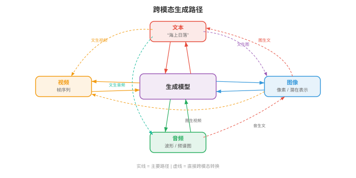
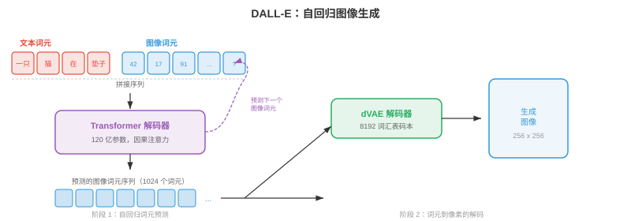
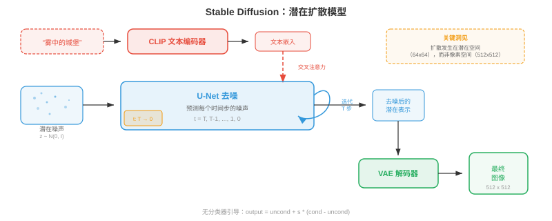
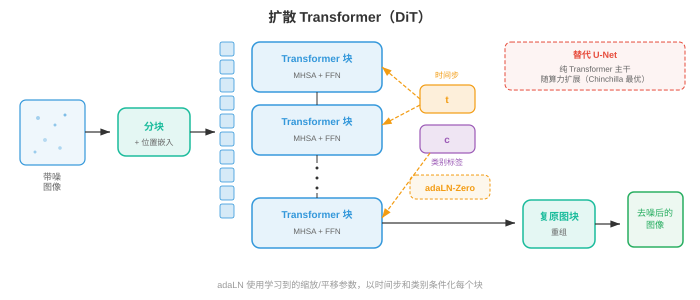
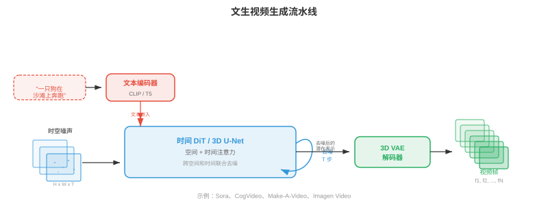
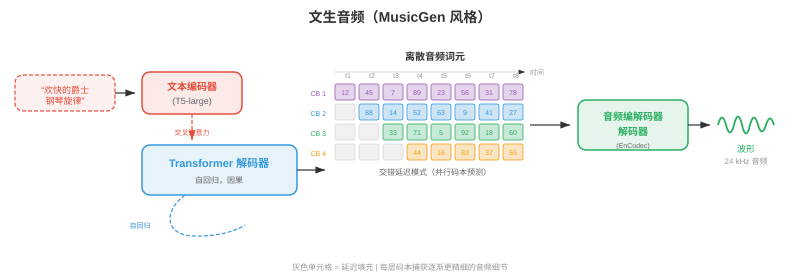
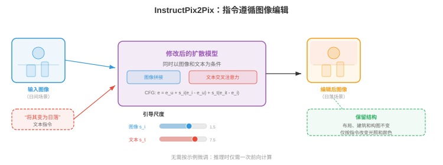
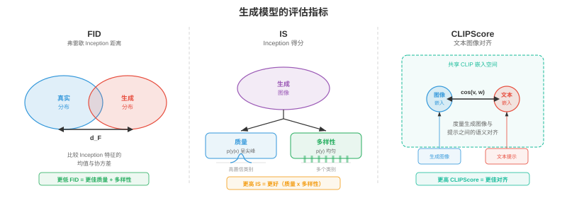

跨模态生成¶
跨模态生成以一种模态的输入为条件，在另一种模态中产生输出：文生图、图生文、文生音频等。本节涵盖 DALL-E、Stable Diffusion、无分类器引导、ControlNet、图像描述、文生视频（Sora）和文生音频。
- 在本章第 01-03 节中，你学习了如何表示、对齐和词元化不同模态。现在进入创造性环节：由一种模态生成另一种模态。跨模态生成是文生图工具、视频合成系统、音乐作曲模型和图像描述背后的引擎。把它想象成教机器成为多媒体艺术家：你用语言描述想要的内容，它便绘画、制作动画或谱曲。
大白话
前几节解决“看懂不同信息”，这一节解决“用一种信息创造另一种”。输入一句话、图片或声音，模型要生成与它匹配的新内容。
- 核心思想是条件生成（conditional generation）：给定模态 \(A\) 的输入（如文本），在模态 \(B\) 中产生输出（如图像）。形式上，学习模型 \(p_\theta(y \mid x)\)，其中 \(x\) 是条件信号，\(y\) 是生成输出。难点在于该条件分布极其复杂且维度很高：一张 512x512 图像位于 \(\mathbb{R}^{786432}\) 中，单个文本提示词对应许多有效图像。
大白话
条件生成不是找唯一标准答案，而是在满足条件的众多可能结果里生成一个合理样本。同一句提示词可以对应无数张不同但都正确的图。

文生图¶
- 想象你向法庭素描师描述一个场景。艺术家必须理解你的话、回忆物体外观、在空间中安排它们，并绘制最终画面。文生图模型做的正是这件事，只是它必须从数据中学习所有这些技能，而非经过多年艺术学校训练。
大白话
文生图同时要求模型听懂语言、记住事物长相、安排布局并画出细节，任何一环差都会让图不符合描述。
DALL-E：自回归图像生成¶
- DALL-E（Ramesh et al., 2021）将图像生成视为序列预测问题，即驱动语言模型的同一范式（第 07 章）。关键洞见是：若能将图像表示为离散词元（回顾第 03 节 VQ-VAE），生成图像就只是逐一生成词元序列。
大白话
DALL-E 把图先翻译成视觉编号，然后像语言模型续写句子一样，一个编号一个编号地“续写”图片。
- 该流水线有两个阶段。首先，离散 VAE（discrete VAE，dVAE）将 256x256 图像压缩为来自 8192 条目码本的 32x32 离散词元网格，把图像缩减为 1024 个词元序列。其次，训练一个 Transformer 解码器（transformer decoder），对 256 个文本词元（BPE 编码）与 1024 个图像词元拼接形成、总计 1280 个词元的联合分布建模：
大白话
第一阶段把图片压成短序列，第二阶段学习“读完文字后，下一个视觉编号该是什么”。
- 生成时，输入文本词元，模型自回归地逐一采样图像词元。其优雅之处在于，它将语言建模的原有机制，即注意力、因果掩码和 top-k 采样，原封不动用于图像合成。
大白话
它先读提示词，再按顺序补出图像 token。语言模型已经成熟的预测机制因此可以直接拿来画图。
- 缺点是自回归生成天生串行：一次生成 1024 个词元很慢，序列早期的任何错误都会累积。DALL-E 通过生成大量候选图像并使用 CLIP（第 01 节）重新排序，来找到与文本提示词最匹配的结果。
大白话
一个个生成会慢，而且早期画错会影响后面。DALL-E 的做法是多生成几张，再让 CLIP 选最符合文字的一张。

Stable Diffusion：文本条件下的潜在扩散¶
- Stable Diffusion（Rombach et al., 2022）采取了根本不同的路径。它不逐一预测词元，而是从纯噪声出发，在文本提示词引导下逐步去噪为图像。回顾第 8 章的扩散模型，Stable Diffusion 工作在压缩潜在空间而非像素空间，因而效率高得多。
大白话
Stable Diffusion 不按编号拼图，而是从一团随机噪点开始，反复问“按这句文字，噪点该往哪种图像靠近”。
- 架构由三个协同组件组成。VAE 编码器将图像从像素空间（\(512 \times 512 \times 3\)）压缩到潜在表示（\(64 \times 64 \times 4\)），维度降低 48 倍。文本编码器（text encoder）（通常是 CLIP 或 OpenCLIP）将文本提示词转换为嵌入向量序列。U-Net 去噪器（U-Net denoiser）接收带噪潜变量、时间步和文本嵌入，预测每一步应减去的噪声。文本条件通过交叉注意力（cross-attention）层进入 U-Net：
大白话
VAE 负责把图压小，文本编码器负责理解提示词，U-Net 负责一步步去噪。交叉注意力让每个图像区域能去看最相关的文字。
- 其中 \(Q\) 来自带噪图像特征，\(K, V\) 来自文本嵌入。这使模型能在每个空间位置关注相关词语，例如对“红球”应该出现的区域去噪时，模型会关注“红”和“球”这两个词元。
大白话
图像区域提出“我该画什么”的问题，文字提供可查阅的答案。画球的位置会更多参考“球”和颜色词。
- 推理时，在潜在空间采样 \(z_T \sim \mathcal{N}(0, I)\)，使用 U-Net 迭代去噪 \(T\) 步（通常使用 DDIM 调度为 20-50 步），再用 VAE 解码器将干净潜变量 \(z_0\) 解码回像素空间。整个前向过程可在消费级 GPU 上数秒内生成 512x512 图像。
大白话
生成过程就是噪声经几十次小修正变成清晰的潜在图，再一次性解码为像素。先在小空间工作，是它速度可接受的原因。

实践中的无分类器引导¶
- 无分类器引导（classifier-free guidance，CFG）是让文生图模型生成真正符合提示词图像的关键配方。回顾第 8 章，CFG 同时以有条件和无条件方式训练模型，然后在采样时放大条件信号：
大白话
CFG 同时问模型“完全不看提示会怎么去噪”和“看提示会怎么去噪”，再把两者差异放大，让生成更听话。
- 其中 \(s\) 是引导尺度。可以将项 \((\epsilon_\theta(x_t, c) - \epsilon_\theta(x_t, \varnothing))\) 视为“指向提示词的方向”，它捕获有条件预测区别于无条件预测的部分。乘以 \(s > 1\) 会夸大这一方向，以牺牲多样性为代价，让图像更接近文本描述。
大白话
\(s\) 像“听指令的音量旋钮”。调大后更严格照提示画，但结果会更死板、更相似。
- 实践中，\(s = 7.5\) 是 Stable Diffusion 的常见默认值。\(s = 1.0\) 时得到原始模型输出，具有多样性但与提示词匹配较松；\(s = 20+\) 时图像会过度饱和且重复，却与文本高度对齐。最优 \(s\) 取决于应用：创意探索偏好较低引导，精确遵循提示词则需要较高引导。
大白话
引导不是越大越好。想要意外和多样性就调低，想尽量执行描述就调高，但过高会把画面推得僵硬失真。
Imagen：具有语言理解的级联扩散¶
- Imagen（Saharia et al., 2022）证明，强大的文本编码器比更大的图像模型更重要。Imagen 不使用 CLIP，而是使用冻结的 T5-XXL 语言模型（第 07 章）作为文本编码器；它对语言语义、组合性和空间关系（“一个红色球体上方的蓝色立方体”）有更丰富的理解。
大白话
画图模型再强，若没听懂“谁在谁上面、什么颜色”，也会画错。Imagen 的重点是先把文字理解透。
- Imagen 使用级联扩散（cascaded diffusion）：基础扩散模型生成 64x64 图像，第一个超分辨率模型放大到 256x256，第二个超分辨率模型到达 1024x1024。每个阶段都是独立扩散模型，以文本和（对上采样器而言）低分辨率图像为条件。该级联避免在基础分辨率上建模细节，使基础模型专注构图和语义，上采样器负责纹理和清晰度。
大白话
先画小草图决定画面内容和位置，再逐级放大补纹理。把“构图”和“高清细节”分开做更容易。
- Imagen 还引入动态阈值（dynamic thresholding）：每步去噪时，将预测像素值裁剪到基于分位数的范围，而非固定范围 \([-1, 1]\)。这可防止高引导尺度下的饱和伪影，后者是扩散模型的常见问题。
大白话
高引导会把数值推得太极端，画面容易过曝或颜色炸掉。动态阈值会按当前结果的分布限幅，而不是用死板边界。
Parti：大规模自回归¶
- Parti（Pathways Autoregressive Text-to-Image，Yu et al., 2022）以极大规模复兴了自回归路径。与 DALL-E 一样，它将图像转换为离散词元（使用 ViT-VQGAN），并使用 Transformer 顺序生成。不同的是，Parti 使用 200 亿参数编码器-解码器 Transformer（基于 Pathways 架构），表明充分扩展后，自回归模型可以达到扩散模型质量。
大白话
Parti 说明自回归画图并非天生落后，只要词元化器和模型规模足够强，也能达到很高质量。
- Parti 的编码器-解码器架构是与 DALL-E 仅解码器设计的关键差异。文本经过编码器；解码器生成图像词元时对已编码文本施加交叉注意力。这类似机器翻译（第 07 章），即从“文本语言”翻译到“图像语言”。
大白话
它先专门读懂文字，再在生成每个视觉 token 时回头查阅文字表示，像把一句话翻译成图像。
DiT 与基于流的生成¶
- 扩散 Transformer（Diffusion Transformers，DiT）（Peebles and Xie, 2023）用普通 Transformer 替换扩散模型中的 U-Net 骨干。每个带噪潜在图块被视为词元（类似第 8 章 ViT），Transformer 使用自注意力和对文本条件的交叉注意力处理这些词元。DiT 表明，Transformer 在扩散中比 U-Net 更可预测地扩展：计算量翻倍可稳定地将 FID 分数减半。
大白话
DiT 把图像分块后交给 Transformer 去联合看全局关系。它的优势是扩大模型和算力后，质量提升更容易预测。
- 流匹配（flow matching）（回顾第 8 章）已成为扩散噪声预测范式的替代方案。模型不预测应减去的噪声 \(\epsilon\)，而是预测速度 \(v_\theta(x_t, t)\)，将样本沿从噪声到数据的直线路径传输。Stable Diffusion 3 与 Flux 使用具有多模态 DiT（multimodal DiT，MM-DiT）架构的流匹配：文本和图像词元通过具有双向注意力的 Transformer 块联合处理，两个模态彼此关注，而非仅由文本通过交叉注意力条件化图像特征。
大白话
流匹配直接学习“当前该往哪个方向走”，把噪声推向图片。MM-DiT 让文字和图像 token 双向交流，而不是只让图像单方面读取文字。

文生视频¶
- 文生视频是文生图外加一个严苛约束：时间连贯性（temporal coherence）。每一帧必须内部一致（是一张有效图像），连续帧也必须平滑连接，对象应自然运动、光照应连续变化，“摄像机”应遵循物理上合理的轨迹。这如同画一幅风景画与执导一部电影的差别。
大白话
单张图画得好还不够，视频要求同一物体前后别变脸、运动别跳帧、光线和镜头也要连贯。
时间挑战¶
- 视频带来图像生成之外的三个挑战。时间一致性（temporal consistency）要求对象跨帧保持身份，例如第 1 帧的狗在第 100 帧仍是同一只狗。运动建模（motion modelling）要求学习物理动力学：对象如何移动、重力如何作用、流体如何流动。计算成本（compute cost）很高：10 秒、24 fps、512x512 分辨率的视频包含 \(10 \times 24 \times 512 \times 512 \times 3 \approx 188\) 百万个值，约是单张图像数据量的 240 倍。
大白话
视频最难的三件事是前后保持同一对象、运动符合常识、以及数据量暴涨。它比画一张图难得多。
Make-A-Video 与扩展到视频的方法¶
- Make-A-Video（Singer et al., 2022）采取务实路径：从预训练文生图模型开始，再增加时间层。关键洞见是，已经有在数十亿图文对上训练的强大图文模型，只需从无标签视频数据中学习运动。
大白话
不必从头学会画每一帧，先复用会画图的模型，只额外学习“画面如何随时间变化”，数据需求更低。
- Make-A-Video 向预训练的空间 U-Net 中插入时间注意力（temporal attention）和时间卷积（temporal convolution）层。空间层（在图像上预训练）处理外观，新增时间层（在视频上训练）处理运动。空间自注意力在每帧内操作；时间注意力在每个空间位置上跨帧操作。该因子化高效，因为时间模式和空间模式在很大程度上可分离。
大白话
原来的图像层负责“这一帧像什么”，新增时间层负责“它下一帧怎么动”。分工后能把已有图像能力直接利用起来。
- 生成流水线模仿 Imagen 的级联：基础模型在 64x64 生成 16 帧，空间和时间超分辨率模型再上采样至最终分辨率和帧率；帧插值网络提高时间平滑度。
大白话
先做低清、低帧率短片，再补清晰度和中间帧。先解决主要运动，后补视觉细节，成本更可控。
VideoPoet 与基于词元的视频模型¶
- VideoPoet（Kondratyuk et al., 2024）在语言建模范式下统一视频生成。文本、图像、视频和音频等所有模态都词元化为离散序列；单一大语言模型（LLM）经过训练，可在所有模态上自回归预测词元。这使零样本能力得以出现：文生视频、图生视频、视频生音频、视频编辑和修复均源自同一模型。
大白话
VideoPoet 把所有内容都变成 token，再交给一个大模型续写。因此不同生成和编辑任务可共享同一套能力。
- VideoPoet 使用 MAGVIT-v2 编码器（第 03 节的 3D VQ-VAE）对视频词元化，联合压缩空间和时间维度；音频由 SoundStream 词元化。LLM 骨干先在文本上预训练，再在多模态词元序列上微调，以学习跨模态联合分布。
大白话
它先让语言模型学会语言，再让它接触视频和音频 token，逐步学会这些 token 怎样互相对应。
Sora 风格的时间扩散¶
- Sora（OpenAI，2024）因能够生成长时、连贯且物理上合理的视频而使时间扩散受到广泛关注。尽管完整架构细节尚未公布，关键思想是将 DiT 扩展至时空：视频帧被分解为时空图块（spacetime patches），即跨高度、宽度和时间的 3D 块，并作为大型 Transformer 的词元。
大白话
Sora 的基本思路是把连续几帧的一小块画面当成一个 token，让 Transformer 从一开始就在三维时空里理解视频。
- 时空图块意味着模型把视频当作原生 3D 信号处理，而非 2D 帧序列。这使其捕获长程时间依赖，能在整个视频时长内“提前规划”，而不是逐帧生成。
大白话
模型不只是盯着当前帧，而是能同时把握更长时间范围的关系，因此更可能保持故事、动作和镜头前后一致。
- Sora 可通过调整时空图块数量处理不同持续时间、分辨率和宽高比。在原始分辨率数据上训练（而非把一切裁剪为正方形）能改善构图和取景质量。
大白话
用多少图块就表示多长、多大的视频。保留原始宽高比训练，也让模型少学到“所有画面都是正方形”的坏习惯。
Wan：开源视频生成¶
- Wan（Wan et al., 2025）是基于 DiT 骨干和 3D VAE 时间压缩的开源视频生成模型家族（13 亿和 140 亿参数）。Wan 使用流匹配（flow matching）而非传统 DDPM 风格扩散，学习从噪声到视频潜变量的直线传输路径。3D VAE 同时压缩视频空间和时间（4 倍时间压缩），DiT 使用完整 3D 注意力处理所得时空潜在词元。
大白话
Wan 把视频先压成更短的三维潜在表示，再让 DiT 用流匹配把噪声推成这段视频，核心是同时压空间和时间。
- Wan 支持文生视频、图生视频（让静态图像动起来）和视频编辑。140 亿参数模型可在 720p 分辨率生成最长 5 秒的连贯视频，表明经过谨慎的架构与训练配方选择，开源模型可接近专有系统质量。
大白话
同一套生成核心可以接受文字、图片或已有视频作为条件，说明架构设计得当时，开源方案也能做到接近产品级效果。

文生音频¶
- 想象一位电影作曲家阅读剧本后为其配乐。文生音频模型做类似事情：给定文本描述，例如“带有暴雨和远处雷声的雷暴”，生成相应音频波形。难点在于弥合离散符号化文本与连续时间性声音之间的鸿沟。
大白话
文字很抽象，声音是每秒大量连续波形。文生音频要把“暴雨、远处雷声”这样的描述变成时间上连续的真实听感。
AudioLM：音频语言建模¶
- AudioLM（Borsos et al., 2023）通过自回归预测离散音频词元生成音频，采用与 DALL-E 生成图像相同的语言建模范式。它使用层级词元结构：语义词元（semantic tokens）（来自 w2v-BERT 等自监督模型，回顾第 9 章）捕获高层内容，例如说了什么或演奏了什么；声学词元（acoustic tokens）（来自神经音频编解码器 SoundStream）捕获细粒度声学细节，例如听起来如何，包括音色和录制质量。
大白话
AudioLM 把声音拆成“内容”和“声音质感”两层：先决定在说什么、演什么，再决定嗓音、乐器和录音细节。
- 生成分为两个阶段。第一阶段，Transformer 根据可选音频提示词预测语义词元，确定高层内容计划。第二阶段，另一个 Transformer 以语义词元为条件预测声学词元，补全声学细节。这一层级映射了文本转语音流水线（第 9 章）：语义词元扮演音素角色，声学词元扮演 mel 频谱图帧角色。
大白话
先写好“要表达什么”的提纲，再补成真正能听见的波形细节。这比一次直接生成所有细节更容易维持内容正确。
- AudioLM 可以生成语音续写（给定 3 秒语音，生成后续 10 秒）、音乐续写和音效，全部由在纯音频数据上训练的单一模型完成，预训练不需要文本标签。
大白话
只靠大量声音本身，模型就能学会声音怎么延续和变化，不一定要先为每段音频人工写文字标签。
MusicLM：文本条件音乐¶
- MusicLM（Agostinelli et al., 2023）将 AudioLM 扩展到文本条件音乐生成。它添加了用于条件生成的文本音频联合嵌入，来自 MuLan，即在音乐文本对上训练的类 CLIP 模型。MuLan 嵌入捕获文本描述的语义，例如“带萨克斯独奏的欢快爵士乐”，并引导层级词元生成。
大白话
MusicLM 需要先把“欢快爵士、萨克斯独奏”这类描述翻译成能和音乐对应的向量，再据此生成音频 token。
- MusicLM 以 24 kHz 生成任意时长的音乐，在数分钟作品中保持旋律和节奏连贯性。它还可以以哼唱旋律（由音高跟踪器提取的旋律词元）和文本描述共同为条件，生成遵循哼唱曲调且具有文本所述风格的完整编曲。
大白话
你可以用文字指定风格，再用哼唱指定旋律走向。模型要同时遵守两种约束，生成一段完整编曲。
MusicGen：高效单阶段生成¶
- MusicGen（Copet et al., 2023）简化了多阶段方法。它不使用独立的语义和声学模型，而是使用单一自回归 Transformer，直接从音频编解码器生成多个码本层级。关键创新是交错码本模式（interleaved codebook pattern）：MusicGen 不在转到下一时间步之前生成一个时间步的所有码本层级，而是在码本与时间步间交错词元，使部分码本层级可以并行解码。
大白话
MusicGen 用一个模型直接产出多层音频 token，并通过交错顺序让一部分预测可并行，减少分阶段模型的复杂度。
- 条件化很直接：T5 编码器编码文本，文本嵌入被置于音频词元序列之前（如语言模型中的前缀提示词）或通过交叉注意力注入。MusicGen 还支持旋律条件：参考旋律的色度图（来自第 9 章讨论的频谱图特征）会被编码并与文本条件一起使用。
大白话
文字告诉模型想要什么风格，旋律特征告诉模型音高怎么走。两种条件可一起约束生成结果。
- 其中 \(a_{t,k}\) 是时间步 \(t\)、码本层级 \(k\) 的音频词元，\(c_{\text{text}}\) 是文本条件。对 \(k\) 的乘积如何分解取决于码本模式，部分层级会并行预测。
大白话
每个时刻的声音由多层 token 共同组成。不同排列方式决定哪些 token 必须先等前面结果、哪些可以同时算。

图生文¶
- 现在翻转方向：给定图像，生成自然语言描述。这就是图像描述（image captioning），是一种以图像为条件的条件文本生成。想象博物馆讲解员描述一幅画：他必须感知视觉内容、理解对象之间关系，并用流畅语言表达观察结果。
大白话
图生文不是简单列物体名称，还要看懂关系和重点，再把视觉信息组织成自然的一段话。
作为条件生成的图像描述¶
- 经典方法使用编码器-解码器（encoder-decoder）架构（第 07 章）。预训练 CNN 或 ViT（第 8 章）将图像编码为一组特征向量。语言模型解码器逐词生成描述，并在每一步关注图像特征：
大白话
编码器先把图片变成可读的视觉笔记，解码器再一词一词写描述，并随时回看这些笔记。
- 其中 \(w_l\) 是描述词语，\(I\) 是图像表示。交叉注意力将文本解码器连接到图像特征，使模型在生成不同词语时能“查看”图像不同区域，例如生成“狗”时关注狗区域，生成“公园”时关注公园区域。
大白话
写到“狗”就把注意力放到狗的位置，写到“公园”就看背景。这让文字和图像区域能一一对上。
- CoCa（Contrastive Captioners，Yu et al., 2022）在单一模型中统一了对比学习（第 01 节 CLIP 风格目标）和图像描述。图像编码器产生的特征既用于与文本的对比对齐，也用于图像描述解码器的交叉注意力。这种多任务训练使 CoCa 同时具备强大的零样本识别能力（来自对比学习）和生成能力（来自图像描述）。
大白话
CoCa 同时练两件事：判断图文配不配，以及把图说成一句话。前者让它认得准，后者让它说得出。
现代视觉语言图像描述¶
- 现代方法常使用大型多模态模型（large multimodal models）（第 02 节）进行图像描述。LLaVA、Qwen-VL 和 GPT-4V 等模型将图像描述视为视觉问答的特例，隐含的问题是“描述这张图像”。视觉编码器（CLIP ViT 或 SigLIP）产生图块词元，投影到 LLM 嵌入空间，LLM 再生成自由形式描述。
大白话
现代多模态 LLM 把“描述图片”看成回答一个默认问题，因此可复用看图问答的理解和语言表达能力。
- 基于 LLM 的图像描述相较专用编码器-解码器模型的优势在于指令遵循（instruction following）：你可要求不同详细程度，例如“一句话描述”或“提供详细段落”；聚焦特定方面，例如“描述颜色”；或生成结构化输出，例如“列出所有对象及其位置”。这种灵活性来自 LLM 的指令微调（第 07 章）。
大白话
专用模型往往只会给固定风格的描述；LLM 能按你的要求决定长短、关注点和输出格式，使用上更灵活。
视频音频协同生成¶
- 想象看一部静音电影，体验是空洞的。视觉内容和音频深度耦合：弹跳的球带有有节奏的撞击声，雨会发出沙沙声，人群会欢呼。视频音频协同生成（video-audio co-generation）旨在同时产生两种模态，并保持所见与所闻的时间对齐。
大白话
视频和声音不是两条独立流水线。动作发生的时刻必须对上声音出现的时刻，否则观众马上觉得假。
联合时间建模¶
- 核心挑战是时间同步（temporal synchronisation）：鼓点音频必须与鼓槌击中鼓面的视觉帧精确同时发生。这要求两种模态都能引用共享时间表示。
大白话
看到鼓槌落下却过半秒才听见声音，就会出戏。模型需要把画面和音频放在同一时间轴上。
- 一种方法是从共享潜在时间线生成视频和音频。CoDi（Composable Diffusion，Tang et al., 2023）等模型为每种模态使用独立扩散模型，但通过共享潜在空间对齐。训练时，跨模态注意力层学习在每个时间步同步视觉与音频特征；生成时，两个扩散过程同时运行，通过共享对齐相互条件化。
大白话
CoDi 虽然有各自生成画面和声音的模型，但它们都对照同一份时间计划，因此能互相校准。
- 上文讨论的 VideoPoet 采用更统一的方式：所有模态词元化为单一序列，LLM 自然学习视频词元与音频词元之间的时间对应关系。包含吠叫狗的视频片段及其对应音频词元会教会模型，将视觉上的吠叫动作与吠叫声音关联起来。
大白话
把视频和声音 token 混在同一序列训练，模型会从大量配对样本中学到“这个动作通常对应这个声音”。
- 时间对齐损失（temporal alignment loss）函数显式强制同步。一种表述在帧级使用对比学习：时间 \(t\) 的音频片段应比其他时间的帧更相似于时间 \(t\) 的视频帧：
大白话
这个损失奖励同一时刻的图像和声音相似，惩罚和错误时刻的声音相似，直接把同步要求写进训练目标。
- 其中 \(v_t\) 和 \(a_t\) 分别是时间 \(t\) 的视频和音频表示，\(\tau\) 是温度参数。它在结构上与第 01 节的 InfoNCE 损失完全相同，只是应用于时间帧级别，而非片段级别。
大白话
它和图文对齐的做法相同，只是把比较单位缩小到每个时间点，要求“此刻的画面配此刻的声音”。
指令遵循生成¶
- 想象你对画家说“让天空更具戏剧性”或“把帽子换成王冠”。指令遵循生成（instruction-following generation）让你能用自然语言命令编辑图像，而不必使用精确的空间掩码或笔触。
大白话
你不必亲自圈选或修图，只需用一句话说清想改什么，模型负责决定怎么改和哪些地方保持不动。
InstructPix2Pix：按描述编辑¶
- InstructPix2Pix（Brooks et al., 2023）训练一个条件扩散模型：输入一张图像和一条文本指令，输出编辑后的图像。其巧妙之处在于训练数据的构造方式：GPT-3 生成编辑指令，例如“把它变成冬天”“把猫变成狗”，并为输入输出配对生成文本描述；文生图模型（Stable Diffusion）再生成相应的图像对。
大白话
真实的“图像加编辑指令”数据很少，所以它先用模型合成大量练习题，再训练编辑模型学会按指令改图。
- 该模型是经过修改的 Stable Diffusion U-Net，同时接收文本指令（通过交叉注意力）和输入图像的潜在表示（沿通道维与带噪潜在表示拼接）。它使用具有两个引导尺度的双重无分类器引导（dual classifier-free guidance）：一个用于文本指令（\(s_T\)），另一个用于输入图像（\(s_I\)）：
大白话
模型同时听两种意见：原图要求“别改太多”，文字指令要求“这里按我说的改”。两个引导尺度可分别调节。
- 其中 \(c_I\) 是输入图像条件，\(c_T\) 是文本指令。第一项引导控制输入图像保留的程度；第二项控制对指令的遵循强度。这为用户提供了一个二维调节器：较高的 \(s_I\) 会更严格地保留原图，较高的 \(s_T\) 则会带来更显著的编辑。
大白话
\(s_I\) 高时更像原图，\(s_T\) 高时改得更彻底。二者不是对错，而是“保留”和“改动”的可调权衡。

SDEdit 与基于噪声的编辑¶
- SDEdit（Meng et al., 2022）提供了一种无需专门训练、更为简单的编辑方法。先对输入图像加噪，即将正向扩散过程运行到中间时间步 \(t_0\)；然后根据描述期望输出的文本提示去噪。噪声量控制编辑强度：低噪声保留结构，适合颜色变化和风格迁移；高噪声允许大幅重构，适合替换对象和改变布局。
大白话
SDEdit 先把原图“擦模糊”一些，再按新提示补回来。擦得少就小改，擦得多就能大改。
- 这一权衡可以精确定量：在时间步 \(t_0\)，带噪图像保留原始信号的 \(\bar{\alpha}_{t_0}\) 部分。去噪过程依照新文本提示填补被破坏的细节。其数学依据是：扩散模型从后验分布 \(p(x_0 \mid x_{t_0}, c)\) 中采样，其中 \(x_{t_0}\) 约束生成结果与原图“接近”。
大白话
加噪后的图仍留多少原图信息由 \(\bar{\alpha}_{t_0}\) 决定。保留越多，最终结果越难偏离原图。
ControlNet：空间条件¶
- ControlNet（Zhang et al., 2023）为文生图扩散增加细粒度空间控制。它训练预训练 U-Net 编码器的一个副本以接受额外输入条件，如边缘图（Canny 边缘）、深度图、姿态骨架和分割图；原始 U-Net 权重保持冻结。ControlNet 编码器的输出通过零卷积（zero convolutions），即初始化为零的 1x1 卷积，被加入冻结 U-Net 的跳跃连接，确保训练从预训练模型原有行为起步，再逐渐学会新条件。
大白话
ControlNet 给文生图多加一张结构草图，例如姿势或边缘。原模型负责画得真实，新分支负责严格遵守位置和轮廓。
- 该架构允许将草图、深度图或人体姿态作为结构指引，再由文本提示填充外观。预训练权重负责照片级真实感和文本理解，ControlNet 层负责对条件的空间保真度。
大白话
你可以指定“东西必须摆在哪、人物必须怎么站”，再让文字决定材质、颜色和风格，控制力比单靠提示词强得多。
一致性与对齐度量¶
- 如何衡量生成图像是否优秀？“优秀”至少包含两个维度：质量（quality），即它是否像真实图像；以及对齐（alignment），即它是否符合文本提示。为量化这些维度，人们提出了多种指标。
大白话
图画得真不代表画对了，画得符合文字也不代表像真的。评估至少要分别看真实感和听话程度。
弗雷歇 Inception 距离（Frechet Inception Distance，FID）¶
- 弗雷歇 Inception 距离（Frechet Inception Distance，FID）（Heusel et al., 2017）衡量生成图像与真实图像的分布在预训练 Inception 网络特征空间中的距离。可以将它理解为比较两组图像集合的“指纹”，而非逐张比较图像。
大白话
FID 不要求生成图和某一张真图一模一样，而是看整批生成图整体上像不像真实图片的集合。
- 真实图像集和生成图像集都会输入 Inception-v3，并收集倒数第二层的激活值。这些激活值分别建模为多元高斯分布 \(\mathcal{N}(\mu_r, \Sigma_r)\) 与 \(\mathcal{N}(\mu_g, \Sigma_g)\)。FID 就是这两个高斯分布之间的弗雷歇距离（Wasserstein-2 距离）：
大白话
公式同时比较两件事：生成图的平均特征是否偏了，以及特征的分散程度是否像真实数据。
- FID 越低越好。FID = 0 表示两个分布完全相同。FID 同时刻画质量，生成图像模糊时，其特征会偏离真实图像；也刻画多样性，模型发生模式坍塌时，\(\Sigma_g\) 会小于 \(\Sigma_r\)。在 ImageNet 256x256 上，典型的最先进结果为 FID < 2.0。
大白话
分数低说明生成图整体更接近真实图。它既会惩罚画得糊，也会惩罚模型只会反复生成少数几种样子。
- FID 有已知局限：它假设特征分布为高斯分布，这只是近似；它需要数千个样本才能稳定估计；并且它使用 Inception 特征，可能无法捕捉全部感知上重要的差异。
大白话
FID 很常用，但不是绝对真相。样本太少、图像不符合 Inception 的偏好，分数都可能误导。
Inception 得分（Inception Score，IS）¶
- Inception 得分（Inception Score，IS）（Salimans et al., 2016）度量两种性质：每张生成图像应能被高置信度地分类，即条件类别分布 \(p(y \mid x)\) 应当尖锐；生成图像集应覆盖许多类别，即边缘分布 \(p(y) = \mathbb{E}_x[p(y \mid x)]\) 应当均匀。IS 通过 KL 散度将二者结合：
大白话
IS 希望单张图让分类器看得很确定，同时整批图不要全是同一类。也就是既清晰又有类别多样性。
- IS 越高越好。其最大值等于类别数，ImageNet 为 1000。IS 奖励质量，即清晰、可识别的图像，也奖励多样性，即对类别的覆盖；但它有显著局限：完全忽略真实数据分布，无法发现某一类别内部的模式缺失，并且因为采用 Inception 的类别预测，会偏向 ImageNet 风格图像。
大白话
IS 可能给“清晰但不真实”的图高分，因为它根本没拿真实数据作对照，所以通常不能单独作为质量结论。
CLIPScore：度量文本图像对齐¶
- CLIPScore（Hessel et al., 2021）使用预训练 CLIP 模型（第 01 节），直接度量生成图像与其文本提示的匹配程度。该得分就是 CLIP 图像嵌入和 CLIP 文本嵌入的余弦相似度：
大白话
CLIPScore 看模型眼中“这张图”和“这句话”像不像一对，分数高说明图更符合提示词。
- 其中 \(E_I\) 和 \(E_T\) 分别为 CLIP 图像编码器与文本编码器。CLIPScore 是无参考指标：它不需要真实图像，只需要文本提示。它与人类对文本图像对齐的判断具有良好相关性，已成为评估文生图模型提示保真度的标准指标。
大白话
只要有提示词就能算 CLIPScore，适合没有“标准答案图片”的文生图任务；但它衡量的是匹配度，不是全部视觉质量。
- 若要与参考描述进行比较，RefCLIPScore 会纳入一张参考图像：
大白话
RefCLIPScore 同时要求图符合文字，也要和给定参考图有视觉相似之处，两边任一项差都会拉低结果。
- 该指标平衡了文本对齐度与对参考图像的视觉相似度。
大白话
它适合有参考图的编辑或重建任务，防止模型只顾听文字却把原有视觉内容完全改丢。

人工评估¶
- 自动指标只是替代性度量，人类判断仍是金标准。常见流程包括成对比较（pairwise comparisons），即两张图中哪一张更符合提示；李克特量表（Likert scales），即按 1 至 5 分评价质量和对齐度；以及 Elo 评分（Elo ratings），即在模型之间采用锦标赛式排序。DrawBench 和 PartiPrompts 基准提供标准化的提示集，用于系统性人工评估。
大白话
指标只能近似人的感受。最后仍要让人看样本、做对比，尤其是检查审美、常识和是否真的满足任务。
伦理考量¶
- 跨模态生成是人工智能中伦理影响最重大的领域之一。根据文本描述创建照片级真实感的图像、视频和音频的能力，带来了从业者必须严肃对待的深刻问题。
大白话
生成能力越像真的，能帮人创作的同时也越容易被用来欺骗、伤害或侵犯他人权益。
深度伪造与虚假信息¶
- 深度伪造（deepfakes）是经生成或篡改、旨在描绘从未发生事件的媒体。文生图和文生视频模型可以制作令人信服的公众人物假照片、伪造证据和误导性新闻图像。危险不仅在于假内容存在，更在于它们会侵蚀人们对全部媒体的信任：若任何图像都可能是假的，任何图像就都无法被完全信任。
大白话
深度伪造最危险的不只是能造假，还会让真的证据也更难被相信，破坏公共信息的信任基础。
- 检测方法包括用真实图像与生成图像训练分类器、分析统计伪迹，GAN 生成图像带有细微的频谱特征，以及嵌入不可见水印，如 Stable Diffusion 的不可见水印和 Google 的 SynthID。然而，检测是一场军备竞赛：生成器不断进步，检测器也必须持续更新。
大白话
检测能提高发现造假的概率，但不能一劳永逸。生成模型会变，检测器也必须不断升级。
生成中的偏差¶
- 在互联网规模数据上训练的模型会继承并放大社会偏差。文生图模型会不成比例地生成肤色更浅的面孔，将某些职业与特定性别联系起来，并在提示描述不足时默认采用西方文化规范。这些偏差根植于训练数据分布，也来自 CLIP/T5 文本编码器，而它们各自的训练语料同样编码了偏差。
大白话
模型从历史数据学习，历史数据里若有刻板印象，模型就可能把它当成默认答案并放大。
- 缓解策略包括整理更具代表性的训练数据、对文本编码器应用去偏技术、使用安全分类器过滤有问题的输出，以及让用户控制人口统计属性。这些都不是完整的解决方案，持续审计不可或缺。
大白话
没有单一开关能消除偏差。数据、模型、过滤和持续检查都要做，而且结果仍要反复审计。
内容过滤与安全¶
- 负责任的部署需要多层保护。输入过滤（input filtering）在生成前拦截有害提示。输出过滤（output filtering）对生成内容分类并拒绝有害材料。NSFW 分类器（NSFW classifiers）检测露骨性内容、暴力或其他有害内容。例如，Stable Diffusion 的安全检查器会计算生成图像的 CLIP 嵌入与一组预定义有害概念嵌入之间的余弦相似度，并标记超过阈值的图像。
大白话
防护不能只堵输入，也要检查输出。多层检查相当于在生成前后都设置关卡，降低明显有害内容流出的概率。
- 许多生成模型，如 Stable Diffusion、Wan，具有开源属性，这在普及访问与防止滥用之间制造了张力。一旦模型权重公开，内容过滤就可能被绕过。这引发了关于何种开放程度恰当、模型开发者承担何种责任的讨论。
大白话
开源让更多人能研究和使用，也让服务端的安全限制不再一定有效。这是能力普及和滥用风险之间的真实取舍。
知识产权与同意¶
- 在互联网数据上训练的生成模型，可能未经同意再现受版权保护的风格、商标或真实人物肖像。法律和伦理框架仍在演进，但负责任的实践包括尊重退出机制、承认训练数据中蕴含的创作贡献，以及开发技术防护措施，防止模型记忆并复现训练样例。
大白话
模型能模仿不代表可以不经同意使用他人的作品、商标或肖像。训练数据来源、退出权和防记忆机制都是实际责任问题。
编码练习（使用 CoLab 或 notebook）¶
-
为一个玩具二维扩散模型实现无分类器引导。在二维数据集，例如带标签的簇上训练条件扩散模型；随后使用不同引导尺度采样，观察质量与多样性的权衡。
import jax import jax.numpy as jnp import matplotlib.pyplot as plt # Toy 2D conditional diffusion with classifier-free guidance def noise_schedule(T): betas = jnp.linspace(1e-4, 0.02, T) alphas = 1.0 - betas return jnp.cumprod(alphas) def forward_diffuse(x0, t, alpha_bars, key): noise = jax.random.normal(key, x0.shape) return jnp.sqrt(alpha_bars[t]) * x0 + jnp.sqrt(1 - alpha_bars[t]) * noise, noise # Generate labelled 2D data: class 0 = ring, class 1 = cluster key = jax.random.PRNGKey(42) k1, k2, k3 = jax.random.split(key, 3) theta = jax.random.uniform(k1, (200,)) * 2 * jnp.pi ring = jnp.stack([jnp.cos(theta), jnp.sin(theta)], axis=1) * 2 ring += jax.random.normal(k2, ring.shape) * 0.1 cluster = jax.random.normal(k3, (200, 2)) * 0.3 data = jnp.concatenate([ring, cluster]) labels = jnp.concatenate([jnp.zeros(200), jnp.ones(200)]) # Simulate CFG: show how guidance pushes samples toward class-conditional modes # Try varying guidance_scale from 0.0 to 5.0 and observe results guidance_scales = [0.0, 1.0, 3.0, 7.0] fig, axes = plt.subplots(1, 4, figsize=(16, 4)) for ax, s in zip(axes, guidance_scales): ax.scatter(ring[:, 0], ring[:, 1], s=8, alpha=0.4, label='Ring (c=0)') ax.scatter(cluster[:, 0], cluster[:, 1], s=8, alpha=0.4, label='Cluster (c=1)') ax.set_title(f'Guidance scale s={s}') ax.set_xlim(-4, 4); ax.set_ylim(-4, 4) ax.set_aspect('equal'); ax.legend(fontsize=7) plt.suptitle('Experiment: vary guidance scale and observe quality vs diversity') plt.tight_layout(); plt.show() # Exercise: train a small MLP denoiser with class conditioning, # then implement the CFG formula to sample with different s values. -
使用完整的弗雷歇距离公式，计算两组二维样本之间的 FID。改变生成分布，观察 FID 如何变化。
import jax import jax.numpy as jnp import matplotlib.pyplot as plt def compute_fid(real, generated): """Compute Frechet distance between two 2D sample sets.""" mu_r, mu_g = jnp.mean(real, axis=0), jnp.mean(generated, axis=0) sigma_r = jnp.cov(real.T) sigma_g = jnp.cov(generated.T) diff = mu_r - mu_g # Matrix square root via eigendecomposition product = sigma_r @ sigma_g eigvals, eigvecs = jnp.linalg.eigh(product) sqrt_product = eigvecs @ jnp.diag(jnp.sqrt(jnp.maximum(eigvals, 0))) @ eigvecs.T fid = jnp.sum(diff ** 2) + jnp.trace(sigma_r + sigma_g - 2 * sqrt_product) return fid key = jax.random.PRNGKey(0) k1, k2, k3, k4 = jax.random.split(key, 4) # Real distribution: standard 2D Gaussian real = jax.random.normal(k1, (1000, 2)) # Generated distributions with increasing divergence shifts = [0.0, 0.5, 1.0, 2.0, 4.0] fig, axes = plt.subplots(1, len(shifts), figsize=(18, 3.5)) for ax, shift in zip(axes, shifts): gen = jax.random.normal(k2, (1000, 2)) * (1 + shift * 0.2) + shift fid = compute_fid(real, gen) ax.scatter(real[:, 0], real[:, 1], s=3, alpha=0.3, label='Real') ax.scatter(gen[:, 0], gen[:, 1], s=3, alpha=0.3, label='Generated') ax.set_title(f'Shift={shift}\nFID={fid:.2f}') ax.set_xlim(-5, 8); ax.set_ylim(-5, 8) ax.set_aspect('equal'); ax.legend(fontsize=7) plt.suptitle('FID increases as generated distribution diverges from real') plt.tight_layout(); plt.show() # Try: change the variance of generated samples without shifting the mean. # How does FID respond to a diversity mismatch vs a location mismatch? -
使用随机投影作为 CLIP 的替代，实现文本嵌入与图像嵌入之间的 CLIPScore 计算。改变两种模态之间的“对齐”程度，观察余弦相似度的表现。
import jax import jax.numpy as jnp import matplotlib.pyplot as plt def cosine_similarity(a, b): return jnp.dot(a, b) / (jnp.linalg.norm(a) * jnp.linalg.norm(b)) def clip_score(img_emb, txt_emb): """CLIPScore: clamped cosine similarity.""" return jnp.maximum(0.0, cosine_similarity(img_emb, txt_emb)) key = jax.random.PRNGKey(42) dim = 512 # CLIP embedding dimension # Simulate aligned and misaligned pairs # Aligned: image and text embeddings share a component k1, k2, k3 = jax.random.split(key, 3) shared = jax.random.normal(k1, (dim,)) shared = shared / jnp.linalg.norm(shared) noise_levels = jnp.linspace(0, 5, 20) scores = [] for noise in noise_levels: noise_vec = jax.random.normal(k2, (dim,)) * noise img_emb = shared + noise_vec * 0.3 txt_emb = shared + jax.random.normal(k3, (dim,)) * noise * 0.3 scores.append(float(clip_score(img_emb, txt_emb))) plt.figure(figsize=(8, 4)) plt.plot(noise_levels, scores, 'o-', color='#2c3e50') plt.xlabel('Noise level (misalignment)') plt.ylabel('CLIPScore') plt.title('CLIPScore decreases as text-image alignment degrades') plt.grid(True, alpha=0.3) plt.tight_layout(); plt.show() # Experiment: what happens if you normalise embeddings before adding noise? # How does dimensionality affect the score distribution?